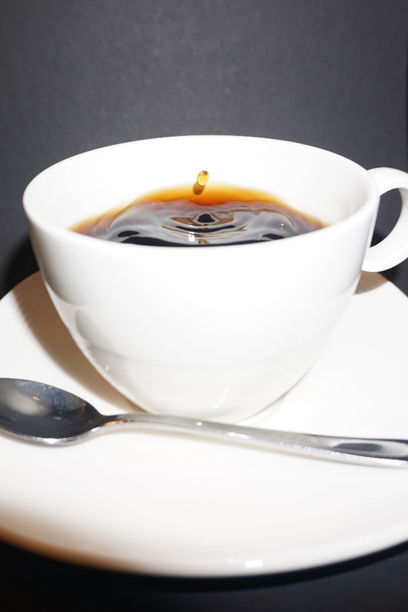

Photo 1
Photography style: colour contrast Description: This photo shows a large group of people gathered at a Dutch festival at night. In the middle of the crowd is a big bonfire, and colorful lights in purple, green, blue, and orange light up the area. People are dancing, talking, and enjoying the music. This photo gives a good sense of the overall atmosphere at Dutch festival events. This particular event is mainly for young people, but a lot of Dutch festivals have people from all ages. Interpretation: This photo represents one of the most popular forms of recreation in the Netherlands: festivals. Dutch people love to celebrate and party with music. Whether it's a techno event, a food truck festival, or a cultural gathering, these events bring people from different backgrounds and cultures together.
Photo 2
Photography style: bird’s eye view perspective In this picture, you see a typical Dutch holiday park. It had luxurious houses and they're placed by the water in the countryside. The houses are built in a traditional Dutch style, made from bricks and with wooden support which adds details. The houses each have a small dock and garden. The houses are surrounded by nature and in the background, you see wind turbines placed in the sea. Interpretation: This park is from the famous company 'EuroParcs', Europarcs has these parks all over the Netherlands, they are placed at beautiful locations where tourists can enjoy the Dutch nature and culture. This one is placed in the Dutch province "Zeeland". Zeeland is known for its beautiful coast and nature, as well as the dunes. The Dutch people go to these kinds of vacation parks with their family during the break to escape the busy city and relax in the countryside. Most of the parks have many facilities, such as swimming pools, playgrounds, restaurants, and most importantly; rental bikes. Tourists, as well as Dutch people, rent bikes to explore the area and enjoy the beautiful nature of the Netherlands. A lot of people from the Netherlands also go camping with tents and caravans on a campsite.
Photo 3
photography style: timing a jump This picture shows a white coffee cup filled with black coffee in front of a dark background. The cup is placed on top of a matching white saucer. Infront of the cup there is a little coffee spoon laying on the saucer. You can see a drop falling into the fresh and hot coffee. The picture freezes the little drop in mid-air above the wavy fluid. In the coffee you can see the reflections of the light. Interpretation: This picture stands for the restaurants and cafes you will find in the Dutch cities and towns all over the Netherlands. This picture shows the freshly made coffees you can get at every café and restaurant. Right here in the Netherlands you will find people at terraces no matter the weather. Everyone wants a good coffee before they go to work, when they meet new people and when they meet people they have already known for a long time. It brings people together and starts conversations even if you don't know the person you are talking to.
Photo 4
photography style: color contrast and playing with perspective Description: In this picture you see a watchtower for recreational use. The photo was taken in the evening so there is a light- dark contrast. You can see the moon shining bright and you can also see a couple of stars and trees. Interpretation: This photo was taken on the dike. This is a recreational place to hike and cycle. I think this photo represents the peace and quiet of nature. It shows the peace you can get in the nature of Oss. The photo was taken in the evening, because it shows more peace and it doesn't show any of the nature itself. The reason that is doesn't show any nature is that now you need to experience it by yourself, and this picture just shows the calm you can get. So it doesn't spoil anything you can see, do or experience there.
Photo 5
photography style: frog perspective Description: This image depicts a dynamic ride in an amusement park. The low angle of the photo highlights the ride's spectacular action and towering height against a partially clouded blue sky. Bright lights illuminate the central arm, and four seats with individuals securely attached are visible on either end. Interpretation: With its enormous swinging arm and revolving seats, the pendulum ride represents motion, change, and intense highs and lows. How we frequently cross organized systems while feeling emotionally tossed around is reflected in the difference between the ride's engineered precision and the excitement that its guests experience.
Infographic